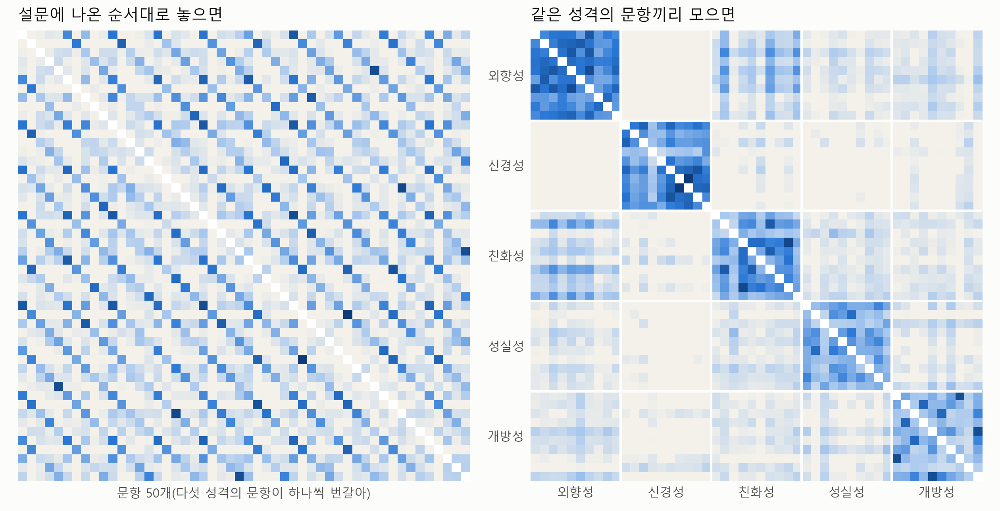
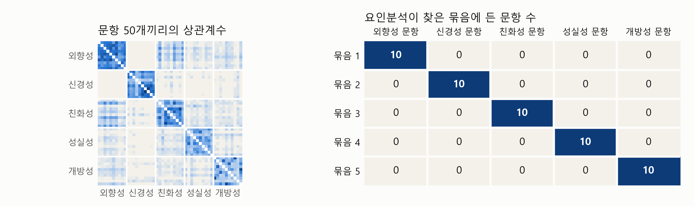
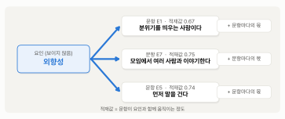
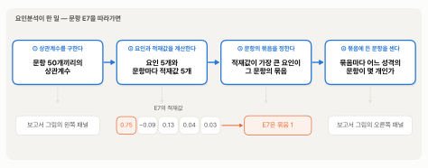
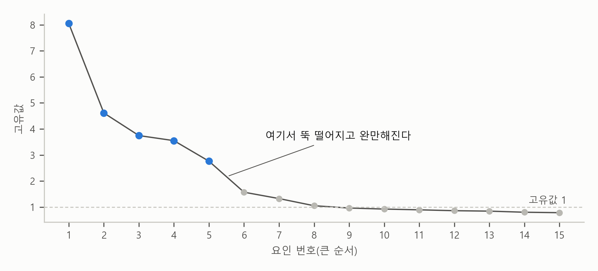
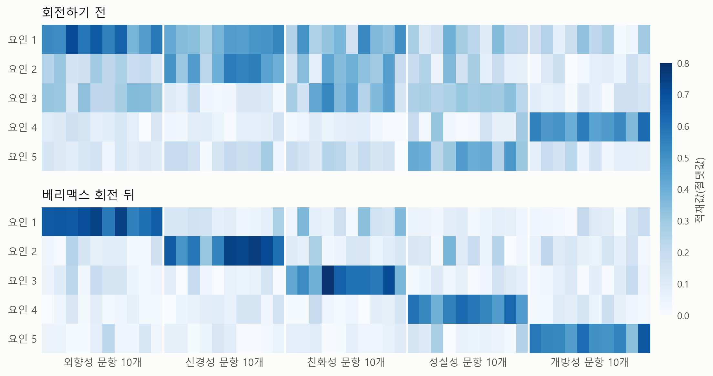

4. 저절로 다섯 묶음으로 나뉘나 — 요인분석#
보고서 요약의 둘째 줄은 이렇습니다.
50문항으로 요인분석을 하면 문항이 성격별로 다섯 묶음으로 나뉘고, 50문항 모두 자기 성격의 묶음에 든다.
앞 절의 크론바흐 \(\alpha\)는 문항들의 묶음을 미리 정해 놓고, 그 묶음 안의 문항들이 함께 움직이는지를 확인했습니다. 묶음과 묶음이 서로 갈리는지는 \(\alpha\)로 알 수 없습니다. 요인분석은 거꾸로 묻습니다. 이번에는 50문항을 한꺼번에 넣고 함께 움직이는 문항끼리 묶으면 어떤 묶음이 나오는지를 봅니다. 미리 답부터 말하면, 요인분석은 함께 움직이는 문항끼리 묶고, 그 묶음 뒤에 있는 보이지 않는 공통 원인(요인)을 찾는 방법입니다. 이 자료에서는 50문항이 다섯 묶음으로 나뉘었고, 그 다섯 묶음은 검사를 만든 사람이 정한 다섯 성격과 꼭 맞았습니다. 이 절에서는 시험지의 예로 묶는 원리를 먼저 보고, 50문항의 답에서 같은 무늬를 확인합니다. 그다음에 요인분석이 찾은 묶음을 보고, 요인과 적재값이 무엇인지를 봅니다. 요인분석 결과표를 직접 봐야 할 때 필요한 것들은 절 뒤쪽에 따로 모았습니다.
과목 표시를 지운 시험지 — 함께 맞히는 문제끼리 묶기#
시험 문제와 실력으로 돌아가 봅시다. 국어 문제와 수학 문제가 섞인 시험지가 있는데, 문제마다 붙어 있던 과목 표시를 누가 지워 버렸습니다. 우리 손에는 학생마다 어느 문제를 맞히고 틀렸는지의 기록만 있습니다. 문제를 읽지 않고 이 기록만으로 문제를 과목별로 나눌 수 있을까요?
나눌 수 있습니다. 표 4-1은 가공의 학생 네 명이 문제 여섯 개를 푼 기록입니다. 하나의 행이 학생 한 명이고 하나의 열이 한 문제입니다.
표 4-1. 네 학생의 채점 기록(가공의 예)
문제 1 |
문제 2 |
문제 3 |
문제 4 |
문제 5 |
문제 6 |
|
|---|---|---|---|---|---|---|
가람 |
○ |
× |
○ |
× |
× |
○ |
나래 |
× |
○ |
× |
○ |
○ |
× |
다온 |
○ |
○ |
○ |
○ |
○ |
○ |
라미 |
× |
× |
× |
× |
× |
× |
열을 위에서 아래로 보면 무늬가 두 가지뿐입니다. 문제 1, 3, 6은 ○ × ○ ×이고, 문제 2, 4, 5는 × ○ ○ ×입니다. 무늬가 같은 열끼리 모으면 문제가 두 묶음으로 나뉩니다. 문제 1, 3, 6은 가람과 다온이 맞혔고, 문제 2, 4, 5는 나래와 다온이 맞혔습니다. 같은 묶음에 든 문제들은 같은 학생들이 함께 맞히고 함께 틀립니다. 앞 절의 말로 하면, 같은 묶음의 문제들이 함께 움직입니다.
이 방법에는 전제가 하나 있습니다. 수학 실력과 국어 실력이 늘 함께 가지는 않는다는 것입니다. 수학은 잘하는데 국어는 그만 못한 학생이 있고, 그 반대인 학생도 있어야 합니다. 표에서는 가람과 나래가 그런 학생입니다. 가람은 한 묶음만 맞혔고 나래는 다른 묶음만 맞혔습니다. 두 묶음이 갈리는 것은 이 두 사람 덕분입니다.
모든 문제를 맞힌 다온과 모든 문제를 틀린 라미만 있었다면, 여섯 열의 무늬가 똑같아서 문제를 나눌 수 없습니다. 수학을 잘하는 학생이 국어도 꼭 그만큼 잘한다면, 기록만으로는 시험지에 과목이 둘이라는 것을 알 수 없습니다. 거꾸로 말하면, 문제가 두 묶음으로 갈린다는 것은 학생들의 실력이 한 가지가 아니라 두 가지라는 증거입니다.
실제 시험에서는 찍어서 맞히거나 실수로 틀리는 일이 있어서 무늬가 이렇게 꼭 같지는 않습니다. 그래도 학생이 수백 명이면 어느 열들의 무늬가 서로 비슷한지는 드러납니다.
다만 기록이 알려 주는 것은 여기까지입니다. 문제가 두 묶음으로 나뉜다는 것은 알 수 있지만, 어느 묶음이 수학이고 어느 묶음이 국어인지는 기록에 없습니다. 묶음에 이름을 붙이려면 문제를 읽어야 합니다. 가령 문제 1, 3, 6이 모두 방정식과 도형 문제라면, 그 묶음 뒤에 있는 것에 수학 실력이라는 이름을 붙일 수 있습니다.
요인분석이 하는 일이 이것입니다. 50문항의 답에서 어느 문항들이 함께 움직이는지를 보고, 문항들을 함께 움직이게 하는 보이지 않는 원인을 몇 개 찾아냅니다. 이 장의 보고서처럼 문항들이 어떻게 묶이는지를 자료에서 찾는 것을 탐색적 요인분석(exploratory factor analysis)이라고 부릅니다.
50문항에서도 같은 무늬가 보인다#
시험지에서 한 일을 50문항에 그대로 해 볼 수 있습니다. 시험지에서는 무늬가 같은 열끼리 모았습니다. 이에 반해, 설문의 답은 ○와 ×가 아니라 1에서 5까지의 숫자입니다. 그래서 두 문항의 답이 얼마나 함께 움직이는지를 앞 절의 상관계수로 잽니다. 상관계수가 크면 두 문항이 함께 움직이고, 0에 가까우면 따로 움직입니다.
그림 4-1은 문항 50개를 둘씩 짝지어 상관계수를 칠한 것입니다. 하나의 행도 한 문항이고 하나의 열도 한 문항입니다. 칸의 색은 그 행의 문항과 그 열의 문항 사이의 상관계수이고, 진할수록 두 문항이 함께 움직입니다. 대각선의 칸은 한 문항과 그 문항 자신의 상관계수로 늘 1이어서, 뜻이 없으므로 비워 두었습니다. 왼쪽 패널은 문항을 설문에 나온 순서대로 놓은 것입니다. 1절에서 말했듯이 설문에서는 다섯 성격의 문항이 하나씩 번갈아 나왔습니다. 오른쪽 패널은 같은 성격의 문항끼리 모아 놓은 것입니다.

그림 4-1. 문항 50개끼리의 상관계수. 설문에 나온 순서대로 놓은 것(왼쪽)과 같은 성격의 문항끼리 모은 것(오른쪽). 칸이 진할수록 두 문항이 함께 움직인다. 역문항은 뒤집은 답으로 계산했고, 0보다 작은 상관계수는 가장 옅은 색으로 칠했다.
그림에서 보듯이 왼쪽 패널에서는 진한 칸이 빗금처럼 흩어져 있습니다. 설문에서 첫째, 여섯째, 열한째 문항은 모두 외향성 문항이고, 둘째, 일곱째, 열두째 문항은 모두 신경성 문항입니다. 같은 성격의 문항이 다섯 칸마다 하나씩 놓여 있으니, 진한 칸도 다섯 칸 건너 하나씩 나타납니다. 오른쪽 패널처럼 같은 성격의 문항끼리 모으면, 진한 칸이 대각선을 따라 다섯 덩어리로 모입니다. 덩어리 안의 문항들은 서로 함께 움직이고, 덩어리 밖의 문항과는 거의 따로 움직입니다. 표 4-1의 채점 기록에서 무늬가 같은 열끼리 모았을 때와 같은 일입니다.
숫자로도 확인할 수 있습니다. 표 4-2는 문항끼리의 상관계수를 성격별로 평균한 것입니다.
표 4-2. 문항끼리의 상관계수 평균
외향성 문항 |
신경성 문항 |
친화성 문항 |
성실성 문항 |
개방성 문항 |
|
|---|---|---|---|---|---|
외향성 문항 |
0.45 |
−0.13 |
0.15 |
0.05 |
0.07 |
신경성 문항 |
−0.13 |
0.40 |
−0.05 |
−0.10 |
−0.04 |
친화성 문항 |
0.15 |
−0.05 |
0.34 |
0.07 |
0.05 |
성실성 문항 |
0.05 |
−0.10 |
0.07 |
0.30 |
0.04 |
개방성 문항 |
0.07 |
−0.04 |
0.05 |
0.04 |
0.28 |
주: 50문항 모두 답한 19,718명. 역문항은 뒤집은 답으로 계산했다. 굵은 숫자는 같은 성격의 서로 다른 두 문항 45쌍의 평균이고, 나머지는 두 성격의 문항 100쌍의 평균이다.
표에서 보듯이 같은 성격의 문항끼리는 상관계수가 평균 0.28 ~ 0.45이고, 다른 성격의 문항끼리는 −0.13 ~ 0.15입니다. 50문항 전체로 보면 같은 성격의 문항끼리는 평균 0.35이고, 다른 성격의 문항끼리는 평균 0.01입니다.
요인분석이 찾은 다섯 묶음 — 보고서의 그림 보기#
그런데 그림 4-1의 오른쪽 패널은 어느 문항이 어느 성격인지를 우리가 알고서 모은 것입니다. 요인분석은 어느 문항이 어느 성격인지 모르는 채로 같은 일을 합니다. 문항끼리의 상관계수만 가지고, 함께 움직이는 문항끼리 묶습니다. 보고서의 요인분석에는 묶음의 수가 다섯이라는 것만 정해 주었습니다.
보고서에 실린 그림을 여기에 다시 가져왔습니다.

보고서 그림 다시 보기. 왼쪽은 문항 50개끼리의 상관계수(칸이 진할수록 두 문항이 함께 움직인다), 오른쪽은 탐색적 요인분석(5요인, 베리맥스 회전)이 찾은 다섯 묶음에 든 문항 수.
왼쪽 패널은 요인분석에 들어간 재료이고, 오른쪽 패널은 요인분석이 내놓은 결과입니다. 왼쪽 패널은 그림 4-1의 오른쪽 패널과 같은 상관계수입니다. 요인분석은 이 상관계수들을 받아 계산합니다. 다만 그림처럼 문항을 성격별로 모아 놓은 순서와 성격의 이름은 받지 않았습니다. 요인분석이 이 상관계수들로 묶음을 어떻게 찾는지는 다음 소절에서 봅니다. 하나의 행은 요인분석이 찾은 한 묶음이고, 하나의 열은 한 성격의 문항 10개입니다. 칸의 숫자는 그 묶음에 든 그 성격의 문항 수입니다.
묶음 1에는 외향성 문항 10개가 모두 들었고, 다른 성격의 문항은 하나도 들지 않았습니다. 묶음 2에는 신경성 문항 10개가 들었고, 나머지 세 묶음에도 한 성격의 문항이 10개씩 들었습니다. 어느 문항이 어느 성격인지 알려 주지 않았는데도, 요인분석이 찾은 다섯 묶음이 검사를 만든 사람이 정한 다섯 성격과 꼭 맞은 것입니다. 보고서 요약 둘째 줄의 “50문항 모두 자기 성격의 묶음에 든다”가 이 표입니다.
묶음에 이름을 붙이는 것은 요인분석이 아닙니다. 요인분석이 내놓는 묶음에는 순서도 이름도 없습니다. 보고서가 “묶음 1 ~ 5”라고만 적은 것도 그래서입니다. 묶음 1에 든 문항들을 읽어 보고 “외향성”이라는 이름을 붙이는 것은 사람이 하는 해석입니다. 표에서 묶음을 성격 순서에 맞춰 늘어놓은 것도 보기 쉽게 하려고 한 일입니다.
요인과 적재값#
요인분석은 묶음마다 그 뒤에 공통 원인이 하나씩 있다고 봅니다. 여러 문항을 함께 움직이게 하는 보이지 않는 공통 원인을 요인(factor)이라고 부릅니다. 묶음이 다섯이니 요인도 다섯입니다. 2절에서는 외향성처럼 직접 관측할 수 없는 개념을 구성개념이라고 불렀습니다. 구성개념은 설문을 만든 사람이 미리 정해 둔 것이고, 요인은 응답자들의 답에서 계산으로 찾아낸 것입니다. 앞에서 본 것은 찾아낸 요인 다섯 개가 정해 둔 구성개념 다섯 개와 맞았다는 것입니다. 그림 4-2는 외향성 요인 하나와 문항 세 개의 관계를 그린 것입니다.

그림 4-2. 보이지 않는 외향성 요인 하나가 문항 세 개의 답을 함께 움직인다. 적재값은 베리맥스 회전 뒤의 값이다.
그림 왼쪽의 외향성은 직접 관측할 수 없습니다. 우리가 가진 것은 오른쪽의 문항 답뿐입니다. 외향성이 높은 사람은 세 문항 모두에 외향적이라고 답하므로, 세 문항이 함께 움직입니다. 하지만 문항의 답이 외향성만으로 정해지지는 않습니다. 문장을 어떻게 받아들였는지, 그 문항에만 해당하는 사정(모임에 갈 일이 별로 없다든가)도 들어 있습니다. 그림의 “문항마다의 몫”이 그것입니다. 앞 절에서 문항이 많을수록 서로 상쇄된다고 한 몫이 이것입니다.
문항이 요인과 얼마나 강하게 함께 움직이는지를 나타내는 숫자를 요인 적재값(factor loading)이라고 부릅니다. 적재값은 문항과 요인 사이의 상관계수처럼 보면 됩니다. 0이면 그 요인과 따로 움직이고, 1에 가까울수록 함께 움직이며, 음수이면 거꾸로 움직입니다. 1에 가까운 문항은 답이 거의 그 요인만으로 정해집니다. 그림 4-2에서 E7(“나는 모임에서 여러 사람과 이야기한다”)의 적재값은 0.75로 E1의 0.67보다 큽니다. E7의 답이 E1의 답보다 외향성을 조금 더 잘 보여 준다는 뜻입니다.
이제 요인분석이 한 일을 처음부터 끝까지 말할 수 있습니다. 네 걸음입니다.
상관계수를 구한다. 응답자들의 답에서 문항 50개끼리의 상관계수를 구합니다. 이 상관계수가 요인분석의 재료입니다.
요인과 적재값을 계산한다. 그 상관계수들을 가장 잘 설명하는 요인 다섯 개를 찾습니다. 그러면 문항마다 다섯 요인 각각에 대한 적재값이 나옵니다. E7이라면 첫째 요인에 대한 적재값이 0.75이고, 나머지 네 요인에 대한 적재값은 0에 가깝습니다.
문항의 묶음을 정한다. 문항마다 다섯 적재값 가운데 가장 큰 것을 찾아, 그 요인을 그 문항의 묶음으로 삼습니다. E7은 묶음 1에 듭니다.
묶음에 든 문항을 센다. 묶음마다 어느 성격의 문항이 몇 개 들었는지를 셉니다. 이것이 보고서 그림의 오른쪽 패널입니다.
그림 4-3은 이 네 걸음을 문항 E7을 따라가며 그린 것입니다.

그림 4-3. 요인분석이 한 일. 문항 E7은 적재값 다섯 개 가운데 첫째 요인의 0.75가 가장 커서 묶음 1에 든다.
보고서의 그림 주에 적힌 “자기 묶음의 적재값 0.31 ~ 0.79”는 50문항이 자기 묶음의 요인과 얼마나 강하게 함께 움직이는지를 말합니다. 가장 약한 문항이 0.31이고 가장 강한 문항이 0.79입니다.
요인분석 결과를 더 자세히 볼 때#
여기까지가 요인분석의 큰 그림입니다. 이 소절은 논문이나 AI의 분석 결과에서 요인분석 결과표를 직접 봐야 할 때 찾아보는 자리입니다. 처음에는 건너뛰어도 됩니다.
문항마다의 적재값#
요인분석은 적재값을 모든 문항과 모든 요인의 짝마다 하나씩 계산합니다. 문항 50개, 요인 5개이니 숫자가 250개입니다. 예를 들어 E7의 적재값은 다섯 요인 차례로 0.75, −0.09, 0.13, 0.04, 0.03입니다. 논문이나 AI의 분석 결과에는 대개 이 숫자들이 표로 나옵니다. 어떤 요인에 대한 문항의 적재값이 크면, 그 문항이 그 요인에 적재됐다(load on)고 말합니다. 표 4-3은 250개 가운데 여덟 문항의 것입니다.
이 표에서는 같은 성격의 문항들이 모인 요인을 그 문항들의 자기 요인이라고 부르겠습니다. 외향성 문항의 자기 요인은 요인 1이고, 신경성 문항의 자기 요인은 요인 2입니다. 보고서의 묶음 1이 요인 1에 해당합니다. 자기 요인은 분석하기 전에 정해 준 것이 아니라, 분석 결과를 보고 나서 붙인 이름입니다.
표 4-3. 문항 여덟 개의 요인 적재값
문항 |
요인 1 |
요인 2 |
요인 3 |
요인 4 |
요인 5 |
|---|---|---|---|---|---|
E1 “나는 모임의 분위기를 띄우는 사람이다” |
0.67 |
−0.04 |
0.05 |
0.00 |
0.05 |
E7 “나는 모임에서 여러 사람과 이야기한다” |
0.75 |
−0.09 |
0.13 |
0.04 |
0.03 |
N8 “나는 기분이 자주 오락가락한다” |
−0.05 |
0.76 |
−0.05 |
−0.14 |
−0.01 |
N4 “나는 기분이 가라앉는 일이 드물다”(역) |
−0.15 |
0.31 |
0.04 |
−0.09 |
0.05 |
A4 “나는 다른 사람의 감정에 공감한다” |
0.06 |
0.03 |
0.79 |
0.04 |
0.01 |
A3 “나는 사람들을 모욕한다”(역) |
−0.07 |
−0.27 |
0.39 |
0.19 |
−0.08 |
C4 “나는 일을 엉망으로 만든다”(역) |
0.08 |
−0.37 |
0.03 |
0.55 |
0.00 |
O9 “나는 이것저것 곰곰이 생각한다” |
−0.14 |
0.15 |
0.19 |
0.03 |
0.33 |
주: 50문항 모두 답한 19,718명, 탐색적 요인분석(5요인, 베리맥스 회전). 역문항은 뒤집은 답으로 계산했다. 굵은 숫자가 자기 요인(같은 성격의 문항들이 모인 요인)이다.
표의 문항은 세 가지 모습으로 나뉩니다.
한 요인에만 크게 적재된 문항. E7은 요인 1에만 0.75로 크게 적재되고 나머지 네 요인에는 0에 가깝습니다. N8은 요인 2에만, A4는 요인 3에만 그렇습니다. 세 문항 모두 그 요인이 자기 요인입니다. 한 가지만 측정하는, 깨끗한 문항입니다.
자기 요인에도 약하게 적재된 문항. N4와 O9는 자기 요인의 적재값이 0.31과 0.33이고, A3도 0.39입니다. 흔히 적재값 0.4를 문항이 요인에 제대로 적재됐는지 가르는 기준으로 씁니다. 크론바흐 \(\alpha\)의 0.7처럼 관행입니다. 이 자료에서 0.4에 못 미치는 문항은 다섯 개인데, 다섯 문항도 다른 요인보다는 자기 요인에 가장 크게 적재됐습니다. 보고서의 그림 주에 적힌 “자기 묶음의 적재값 0.31 ~ 0.79”에서 가장 낮은 0.31이 N4입니다.
두 요인에 함께 적재된 문항. C4(“나는 일을 엉망으로 만든다”)는 자기 요인인 요인 4(성실성)에 0.55로 적재되면서, 요인 2(신경성)에도 −0.37로 꽤 적재됩니다. 일을 엉망으로 만든다고 답하는 사람이 성실성이 낮은 쪽으로도, 신경성이 높은 쪽으로도 기운다는 뜻입니다. 이처럼 한 문항이 두 요인에 함께 적재되는 것을 교차 적재(cross-loading)라고 부릅니다. 50문항 가운데 자기 요인이 아닌 요인의 적재값이 가장 큰 문항입니다. 교차 적재가 큰 문항은 두 가지를 섞어 측정하므로, 척도를 새로 만들 때는 빼는 경우가 많습니다.
C4의 부호는 이렇게 이해하면 됩니다. C4는 역문항이라 답을 뒤집었으므로, 뒤집은 점수가 높을수록 일을 엉망으로 만들지 않는다는 뜻입니다. 성실한 사람은 이 점수가 높아서 성실성 요인의 적재값이 양수(0.55)입니다. 신경성이 높은 사람은 일을 엉망으로 만든다고 답하는 편이라 이 점수가 낮고, 그래서 신경성 요인의 적재값은 음수(−0.37)입니다.
참고: 요인분석 결과에는 보고서에 싣지 않은 숫자도 함께 나옵니다. “다섯 요인이 설명한 분산 40%”가 그런 숫자이고, 그림 4-2로 이해하면 됩니다. 문항의 답이 흩어진 정도 가운데 다섯 요인과 함께 움직이는 몫이 평균 40%라는 뜻입니다. 나머지 60%가 그림 4-2의 “문항마다의 몫”입니다. 다섯 요인과 함께 움직이는 몫은 문항마다 달라서, A4가 63%로 가장 크고 N4가 13%로 가장 작습니다. 설문 문항 하나의 답에는 원래 그 문항만의 몫이 많이 들어 있습니다. 문항 하나로 측정하지 않고 여러 개를 모으는 까닭이 여기서도 보입니다.
몇 개로 묶을까 — 고유값과 꺾이는 곳#
앞에서 말했듯이 보고서는 요인을 다섯 개로 정해 놓고 분석했습니다. 이 검사가 다섯 성격을 측정하려고 만든 것이니 자연스럽습니다. 그런데 자기 설문을 처음 분석할 때는 요인이 몇 개인지 모르는 경우가 많습니다. 그럴 때 먼저 보는 숫자가 고유값(eigenvalue)입니다.
고유값은 요인 하나가 문항들의 흩어짐을 얼마나 설명하는지를 “문항 몇 개 몫”으로 나타낸 숫자입니다. 문항이 50개이니 고유값을 모두 더하면 50이 됩니다. 이 자료에서 가장 큰 요인의 고유값은 8.05로, 문항 8개 몫을 혼자 설명합니다. 그림 4-4는 고유값을 큰 순서대로 15개 늘어놓은 것입니다. 이런 그림을 스크리 그림(scree plot)이라고 부릅니다. 스크리는 산비탈 아래에 무너져 쌓인 돌무더기를 가리키는 말입니다. 그림의 모양이 가파른 비탈 뒤에 완만한 돌무더기가 이어지는 모습이라 붙은 이름입니다.

그림 4-4. 50문항의 고유값(큰 순서대로 15개). 고유값을 모두 더하면 문항 수 50이 된다.
그림에서 보듯이 고유값은 처음 다섯 개가 8.05, 4.62, 3.75, 3.55, 2.76으로 크고, 여섯째부터 1.57, 1.33, 1.05, …로 뚝 떨어져 완만해집니다. 요인 수를 정하는 흔한 방법은 둘입니다.
고유값이 1을 넘는 요인만 남긴다. 문항 하나 몫보다 많이 설명하는 요인만 쓰겠다는 생각입니다. 이 자료에서는 8개가 1을 넘습니다.
그래프가 꺾이는 곳까지 남긴다. 가파른 비탈이 끝나고 돌무더기가 시작되는 곳 앞까지만 의미 있는 요인으로 봅니다. 이 자료에서는 다섯째 요인 뒤에서 꺾입니다.
두 방법의 답이 8과 5로 다릅니다. 이런 일은 흔합니다. 고유값 1의 기준은 문항이 많을 때 요인을 너무 많이 남기는 경향이 있다고 흔히 말합니다. 결국 요인 수는 숫자 하나가 정해 주지 않습니다. 꺾이는 곳을 보고, 요인마다 적재된 문항을 읽어 보아 뜻이 통하는 묶음인지도 확인해서 정합니다. 이 자료에서는 다섯으로 묶었을 때 모든 문항이 자기 성격의 요인에 적재되어 뜻이 분명했습니다.
참고: 고유값은 요인 수를 가늠하려고 요인분석 전에 하는 간단한 계산(주성분분석)에서 나옵니다. 처음 다섯 고유값을 더하면 22.7이고, 50으로 나누면 약 45%입니다. 앞에서 본 “다섯 요인이 설명한 분산 40%”와 다른 것은 요인분석이 문항마다의 몫을 따로 떼어 두고 계산하기 때문입니다. 요인 수를 정하는 데는 이 차이가 문제 되지 않습니다.
회전 — 같은 결과를 보기 좋은 각도에서#
보고서의 그림 설명에는 “베리맥스 회전”이라는 말이 있습니다. 요인분석은 처음에 가장 큰 요인부터 차례로 뽑습니다. 그렇게 뽑은 그대로의 적재값은 대개 해석하기 어렵습니다. 그림 4-5는 적재값 250개를 칠한 것입니다. 하나의 열이 한 문항이고 하나의 행이 한 요인이며, 칸이 진할수록 적재값이 큽니다. 부호는 떼고 크기만 칠했습니다. 위 패널이 회전하기 전이고 아래 패널이 회전한 뒤입니다.

그림 4-5. 회전하기 전(위)과 베리맥스 회전 뒤(아래)의 요인 적재값. 같은 자료, 같은 다섯 요인이다.
그림에서 보듯이 회전하기 전에는 요인 1에 외향성, 신경성, 친화성 문항이 두루 적재되어 있습니다. 50문항 가운데 29개가 요인 1에 0.3 이상으로 적재됩니다. 가장 큰 요인부터 뽑다 보니 여러 성격에 걸친 큰 묶음이 먼저 뽑힌 것입니다. 이대로는 요인 1이 무엇인지 이름을 붙이기 어렵습니다. 회전한 뒤에는 문항마다 한 요인에만 크게 적재되어 다섯 묶음이 또렷합니다.
회전은 결과를 바꾸는 것이 아니라 보는 각도를 바꾸는 것입니다. 같은 조각상을 정면에서 찍으면 팔이 몸에 가려 보이지 않지만, 옆으로 조금 돌아가서 찍으면 팔과 몸이 따로 보입니다. 조각상은 그대로입니다. 요인분석의 회전도 그렇습니다. 다섯 요인이 함께 설명하는 몫(40%)은 그대로 둡니다. 그 몫을 다섯 요인이 나눠 갖는 방식만 바꿔서, 문항마다 한 요인에 몰리게 합니다.
베리맥스(varimax)는 요인끼리 서로 관계가 없다고 두고 돌리는 가장 흔한 회전입니다. 요인끼리 관계가 있어도 되게 돌리는 방법(오블리민 같은 사각 회전)도 있습니다. 성격 다섯 가지는 서로 조금씩 관계가 있을 수 있어서 사각 회전을 쓰는 연구도 많습니다. 보고서에서 회전 이름을 만나면 “적재값을 보기 좋게 돌렸구나” 하고 이해하면 됩니다.
보고서에서 만날 다른 이름들#
설문 연구의 보고서에는 이 장의 보고서에 없는 이름들도 자주 나옵니다. 모두 이 절의 생각 위에 있으므로, 이름과 자리만 알아 두면 보고서를 이해할 수 있습니다.
KMO(Kaiser-Meyer-Olkin)와 바틀렛 검정(Bartlett’s test): 요인분석을 하기 전에, 문항들이 요인분석을 할 만큼 서로 함께 움직이는지를 점검하는 숫자입니다. 문항들이 서로 거의 관계없이 따로 움직이면 묶을 것이 없기 때문입니다. KMO는 0과 1 사이이고, 클수록 요인분석에 알맞다는 뜻입니다. 바틀렛 검정은 “문항들이 서로 아무 관계도 없다”는 가설을 검정합니다. \(p\)값이 작으면 요인분석을 해 볼 만하다는 뜻입니다.
확인적 요인분석(confirmatory factor analysis): 탐색적 요인분석이 묶음을 자료에서 찾는다면, 확인적 요인분석은 “E1 ~ E10은 외향성, N1 ~ N10은 신경성”처럼 묶음을 미리 정해 놓고 자료가 그 묶음과 잘 맞는지 확인합니다. 앞 절의 크론바흐 \(\alpha\)와 같은 방향의 물음을 더 엄밀하게 묻는 셈입니다. 이 장의 검사처럼 어느 문항이 어느 묶음인지 이미 정해진 척도라면 확인적 요인분석이 더 알맞은 도구입니다. 그래도 이 장은 탐색적 요인분석을 썼습니다. 묶음을 알려 주지 않았는데도 정해 둔 묶음이 나온다는 것이 더 강한 증거이기 때문입니다. 설문을 직접 만들거나 다른 나라의 척도를 옮겨 쓸 때는 묶음이 생각대로 나올지 모르는 채로 시작하므로, 여러분이 먼저 쓰게 될 도구이기도 합니다. 결과에는 묶음이 자료와 얼마나 잘 맞는지를 나타내는 적합도 지수(CFI, TLI, RMSEA 같은 이름)가 붙습니다.
구조방정식 모형(structural equation model, SEM): 확인적 요인분석으로 구성개념을 측정하고, 그 구성개념끼리의 관계(직무 만족이 이직 의도에 미치는 영향 같은)를 회귀식처럼 한꺼번에 추정하는 모형입니다. 경영학 설문 연구에서 가장 많이 쓰이는 모형이고, 그 변형인 PLS-SEM도 자주 보입니다. 측정 부분의 결과에는 이 장에서 본 적재값과 신뢰도가 그대로 나옵니다. 여기에 숫자 둘이 더 붙는 경우가 많습니다. 개념 신뢰도(CR)는 크론바흐 \(\alpha\)처럼 문항들이 일관되게 측정하는 정도를 나타냅니다. 평균분산추출(AVE)은 문항들의 답이 흩어진 정도 가운데 그 구성개념이 평균으로 얼마를 설명하는지를 나타냅니다.
이 책은 이 모형들을 직접 다루지 않습니다. 보고서에서 만나면, 측정 부분은 이 장의 적재값과 신뢰도로, 구성개념끼리의 관계는 회귀분석의 계수로 해석하면 됩니다.
💡 팁: 자기 설문의 문항이 몇 개의 묶음으로 나뉘는지 보고 싶다면 AI에게 이렇게 요청해 보세요. “역문항의 답을 뒤집은 리커트 문항으로 탐색적 요인분석을 해 줘. 먼저 KMO와 바틀렛 검정, 고유값과 스크리 그림을 보여 주고, 요인 수는 스크리 그림과 문항의 뜻을 함께 보고 제안해 줘. 회전은 베리맥스로 하고, 적재값 표에서 0.4 미만인 문항과 두 요인에 0.3 이상 적재되는 교차 적재 문항을 표시해 줘.” 요인 수는 AI의 제안을 그대로 받지 말고, 요인마다 적재된 문항을 직접 읽어 보고 뜻이 통하는지 확인합니다.
요약 — 이 절의 물음과 답
요인분석은 무엇을 하나? 함께 움직이는 문항끼리 묶고, 그 묶음 뒤에 있는 보이지 않는 공통 원인(요인)을 찾는다. 과목 표시를 지운 시험지에서 같은 학생들이 함께 맞히는 문제끼리 묶으면 문제가 과목별로 나뉘는 것과 같다.
이 자료에서는 무엇이 나왔나? 같은 성격의 문항끼리는 상관계수가 평균 0.35로 함께 움직이고, 다른 성격의 문항끼리는 평균 0.01로 따로 움직인다. 요인분석은 어느 문항이 어느 성격인지 모르는 채로 다섯 묶음을 찾았다. 묶음마다 한 성격의 문항 10개가 빠짐없이 들었다. 묶음에 이름을 붙이는 것은 사람이다.
요인과 적재값은 무엇인가? 요인은 묶음 뒤에 있는 보이지 않는 공통 원인이다. 적재값은 문항이 요인과 얼마나 강하게 함께 움직이는지를 나타내는 숫자다. 0이면 따로 움직이고 1에 가까울수록 함께 움직인다. 문항별 적재값을 보는 법, 요인 수를 정하는 법, 회전은 “요인분석 결과를 더 자세히 볼 때”에 있다.